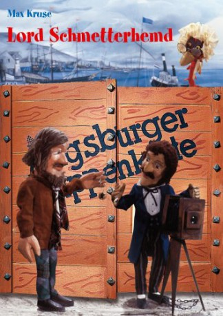

")
 
 IMDB-Wertung: 7.6 / 10
IMDB-Wertung: 7.6 / 10  Metascore:
Metascore: 
Der völlig verarmte, aber unternehmungslustige Lord Schmetterhemd macht sich auf in den Wilden Westen. Dort will er Fotos machen, die Enkelin von Mr. Pinch suchen und einen Schatz finden. Mit von der Partie sind die längst verstorbenen Ahnen des Lords, in Gestalt von diversen Tieren sowie der treue Butler seiner Lordschaft. In Amerika bekommt es die merkwürdige Reisegruppe mit dem "Großen Koyoten" und dem "Tödlichen Colt" zu tun. Wie gut, dass Häuptling "Schneller Bison" auf ihrer Seite steht.
Jahr: 1979
Dauer: 27 Minuten
FSK:
Land: West-Deutschland Studio: Augsburger PuppenkisteTonspuren:
Untertitel:
Auflösung: SD (576x432) Größe: 275 MB
Regisseur: Manfred Jenning
Drehbuch: Manfred Jenning, Max Kruse
Soundtrack:
Darsteller:
Datei: X:\Kinder Serien\Augsburger Puppenkiste\Lord Schmetterhemd\Augsburger Puppenkiste - Lord Schmetterhemd - 1 - Besuch aus dem Jenseits.avi seit 16.11.2019
Festplatte: Kinder-Filme+Trick
 Es gibt insgesamt 56 Filme in der Gruppe 'Kinder Serien'
Es gibt insgesamt 56 Filme in der Gruppe 'Kinder Serien'